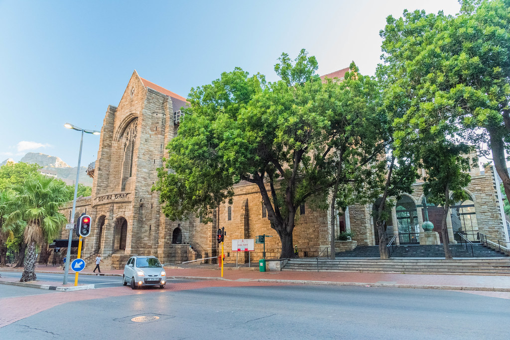

THAMSANQA MPONTSHANE
New York

Cape Town is one of the most beautiful city in South Africa . It comprises of Table Mountain and Robben Island which are the most visited tourist attractions in Cape Town . Although Cape Town is my Home town the are some places I haven't visited before like Robben Island and Cape Town Diamond Meuseum which I hope to visit by this year . Not only is Cape Town a tourist hub it is also a business hub that provides employment to thousands of MOTHER CITY residents.
Foreign Language
The language I adore and would love to learn the most is Irish which is a language that originates from Ireland in Europe . The first time I heard Irish was when I was listening to Drill Music , from there the rest is history .
| Irish | English |
|---|---|
| Bia | Food |
| Carr | Car |
| Scoil | School |
Historical Places
St George Cathedral
Known as the “People’s Cathedral” for its role in the resistance against apartheid, St. George’s Cathedral is the oldest cathedral in Southern Africa and the mother church of the Anglican Diocese of Cape Town. We invite you to visit our historical and beautiful building and to be part of an active and dedicated congregation, contributing to the life of the Cathedral and the broader Cape Town community.
Cape Town City Hall
Cape Town City Hall is a large Edwardian
building
in Cape Town city centre which was built in 1905. It is located on
the Grand Parade to the west of the Castle and is built from
honey-coloured oolitic limestone imported from Bath in England.

The Castle of GoodHope
The Castle of Good Hope known locally as the Castle or Cape Town Castle is a bastion fort built in the 17th century in Cape Town, South Africa. Originally located on the coastline of Table Bay, following land reclamation the fort is now located inland. In 1936 the Castle was declared a historical monument (now a provincial heritage site) and following restorations in the 1980s it is considered the best preserved example of a Dutch East India Company fort.